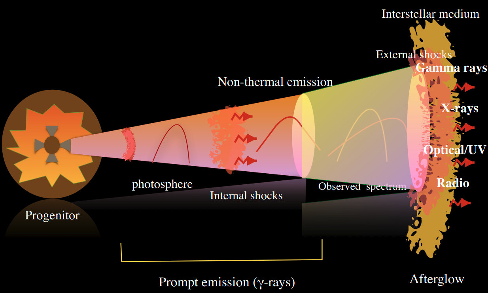
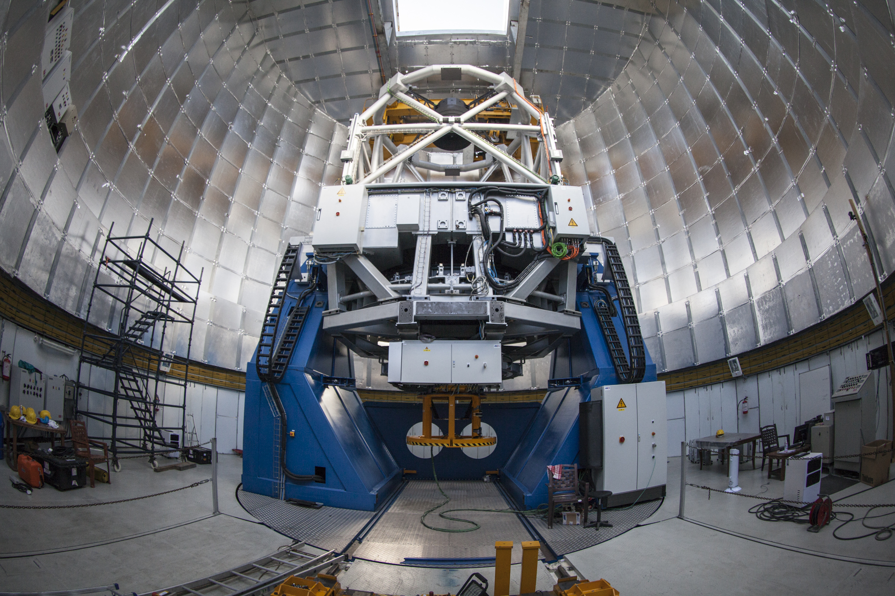
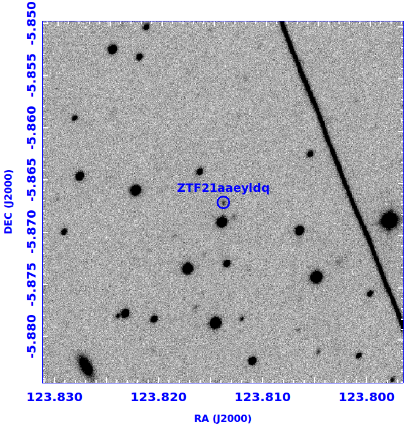
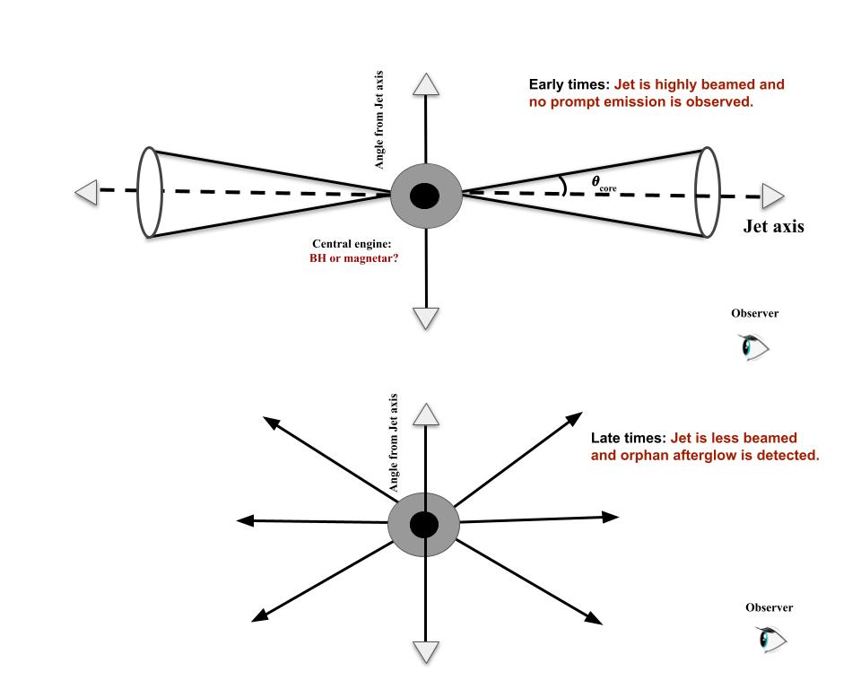
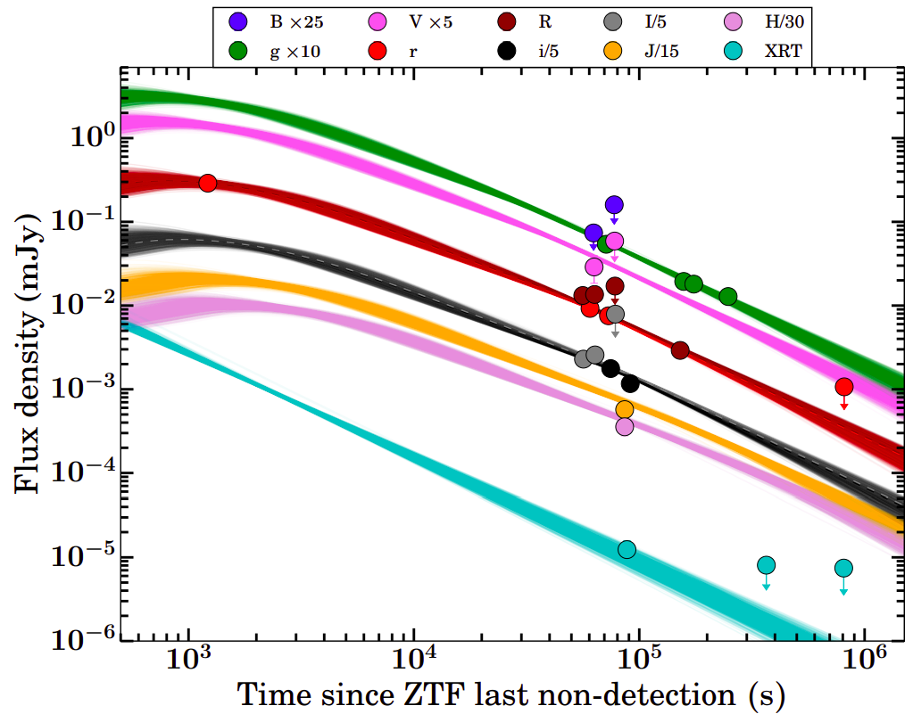
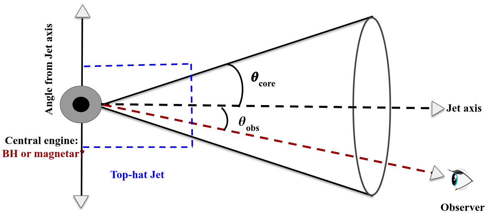

Revealing the nature of the brightest & explosive astronomical sources in the sky using 3.6m Devasthal Optical Telescope (DOT)
India has a long history of more than two decades of observations of optical counterparts of gamma-ray bursts (GRBs) using Indian meter-class telescopes like the 1.04m Sampurnanand Telescope (ST), 1.3m Devasthal Fast Optical Telescope (DFOT), 2m Himalayan Chandra Telescope (HCT), and 2.34m Vainu Bappu Telescope (VBT) utilizing the longitudinal advantage of the place. In recent times, astronomers started exploring these exciting and explosive astronomical sources using recently commissioned (since 2016) India’s largest optical telescope, i.e., 3.6m Devasthal Optical Telescope (DOT) at Devasthal observatory of Aryabhatta Research Institute of Observational Sciences (ARIES), Nainital. In a short period of the proposed target of opportunity (ToO) observations (since cycle 2020-C2), DOT discovered many interesting results such as the detection of long GRB (GRB 211211A) from a neutron star-white dwarf merger, the detection of host galaxies of peculiar GRBs, the detection of most delayed optical flare (GRB 210204A) observed from any GRB so far, etc. This article briefly summarizes the recent discovery of dark (GRB 210205A) and orphan (AT2021any/ZTF21aaeyldq) afterglows of GRBs using 3.6m DOT + 4K × 4K CCD Imager.
Similar to humans, stars also have a life cycle. They are born, live, and at some point, they die. High mass (more massive than eight solar mass) and low mass (typical to solar mass) stars follow a different life cycle. The death of massive stars produces the brightest and most explosive astronomical sources known as gamma-ray bursts (GRBs). GRBs are powerful bursts of high-energy gamma-ray radiation and are among the most exotic phenomena studied in modern astronomy. GRB emits more energy in a second than our Sun will emit in its lifetime. GRB events have two distinct emission phases: one is the short-lived prompt emission (the initial burst phase, peak at sub-MeV energy range), followed by a long-lived multiwavelength afterglow phase. The prompt emission (initial gamma-ray emission) of GRBs is automatically discovered by space-based gamma-ray missions such as NASA’s Fermi Gamma-ray Space Telescope, Neil Gehrels Swift Observatory, India’s AstroSat, and many more. Based on the observed time scale of prompt emission, astronomers classify GRBs as long or short, whether the event lasts more or less than two seconds. Their duration is associated with their origin: long GRBs occur with the death of massive stars, while short GRBs have been proven to be the electromagnetic counterparts of the gravitational wave (originated due to the merger of two compact objects) signals discovered recently by LIGO/Virgo. GRBs are believed to originate from a “jet” moving at a relativistic speed, launched by a fast rotating stellar-mass black hole or magnetized neutron star formed at the core collapse of a massive star (long GRBs, duration > 2 sec) or in the merger of compact objects (short GRBs, duration < 2 sec). The ejected out-flowing can have various shells that can collide with each other creating internal shock, which is responsible for the prompt gamma-ray emission. Later on, this material expands and interacts with the pre-existing material surrounding the GRB events (external shock), producing the broadband synchrotron radiation, which attributes to the afterglow emission (see Fig. 1).

Figure 1: The theoretical understanding of prompt emission and afterglow of GRBs (Credits: Dr. S. Iyyani.)
Soon after the GRB-prompt discovery, ground-based multi-wavelength observational facilities (including ARIES telescopes in the optical/NIR bands) started searching for the associated afterglows across the electromagnetic spectrum. Specifically, optical observations play a crucial role in constraining the redshift, energetics, environments, and geometry of these powerful astronomical sources. The longitudinal advantage of the Devasthal observatory (which lies in between the Canary Islands and Eastern Australia) and deep imaging/spectroscopy capabilities of back-end instruments (at visible and near-infrared bands) of the 3.6m DOT telescope (see Fig. 2a) together provide a unique opportunity to perform deep and longer follow-up observations of the optical counterparts/ associated host galaxies of GRBs.
Based on the optical brightness, some of the optical afterglows of GRBs are defined as Dark GRBs. In the case of dark GRBs, either optical afterglow is very faint or not detected even after a deep and long search using optical telescopes. In addition, a few rare optical afterglows are detected independently without any prior prompt emission detection from space-based gamma-ray satellites, known as Orphan GRBs. This article highlights the recent discovery of dark (GRB 210205A) and orphan (AT2021any/ZTF21aaeyldq) afterglows of GRBs using 3.6m DOT+ 4K × 4K CCD Imager (see Fig. 2b).

Figure 2a: A picture of the 3.6m DOT telescope (India’s largest optical facility) installed at Devasthal observatory of ARIES, Nainital. (Credits: Ajay Talwar, Wikipedia )
{kind=link}

Figure 2b: The detection of the third known orphan afterglow with a measured redshift so far using 3.6m DOT + 4K × 4K CCD Imager. (Credits: Author)
In the case of GRB 210205A, an X-ray afterglow was discovered using Swift X-ray Telescope (XRT). We performed the optical follow-up observations to search for the optical afterglow using the 3.6m DOT + 4K × 4K CCD Imager; however, we did not find any optical afterglow despite deep follow-up observations, supporting the dark nature of the burst. We investigated the possible reason for the optical darkness. We found that either intrinsic faintness of the source or high redshift origin was a possible reason for the optical darkness of the afterglow of GRB 210205A.
For AT2021any, no gamma-ray prompt emission counterpart was reported by any space-based satellites, and the Zwicky Transient Facility (ZTF, a survey telescope) independently discovered this source. We also detected this object using 3.6m DOT + 4K × 4K CCD Imager (see Fig. 2b) and found that it is the third known orphan afterglow with a measured redshift. The detection of orphan afterglows can be explained by one of the scenarios:
- If the source is observed on-axis (viewed along the line of sight to the observer on the Earth), similar to typical GRBs, however, the prompt emission of GRBs (the initial gamma-ray counterpart) was unambiguously missed by space-based gamma-ray telescopes, either due to their limiting sensitivity or source was not in their field of view.
- Suppose the source is observed off-axis (viewed outside the line of sight to the observer on the Earth). In that case, the emitted flux from the prompt emission decreases very sharply outside the opening of the jet because of the relativistic beaming of photons (when photons are moving with ultra-relativistic speed emit radiation in a beam in the direction of motion). Such faint prompt emission will be very hard to detect by GRB satellites. Later on, as the jet decelerates (due to external shock), the relativistic beaming becomes less intense, and the emission from the jet becomes detectable to observers at larger viewing angles (off-axis). We only detect the afterglow emission without any prior detection of the prompt gamma-ray emission (see Fig. 3).

Figure 3: A schematic diagram showing the possibility of detection of the orphan afterglow from the off-axis scenario. (Credits: Author)
In the case of AT2021any, we performed a detailed broadband afterglow modelling (see Fig. 4a) and confirmed that AT2021any is observed on-axis (see Fig. 4b), and a gamma-ray counterpart was missed by GRBs satellites. We expect to detect more similar sources in the current era of survey telescopes with large fields of view like ZTF and others.

Figure 4a: Broadband afterglow light curve and modelling of AT2021any. (Credits: Author)

Figure 4b: A schematic diagram for the possible explanation of the orphan nature of AT2021any/ZTF21aaeyldq. (Credits: Author)
Our results emphasize that the 3.6m DOT has a unique capability for deep follow-up observations of similar and other new transients for deeper observations as a part of time-domain astronomy in the future. GRBs are multiwavelength phenomena. Therefore, along with optical/near-infrared observations using 3.6m DOT, the follow-up observations at other wavelengths using Indian facilities, such as at radio wavelength using Giant Meter Radio Telescope (GMRT) and at UV/X-ray by Indian Space Observatory (AstroSat), may provide a comprehensive picture of these sources.
Original paper: Revealing nature of GRB 210205A, ZTF21aaeyldq (AT2021any) and follow-up observations with the 4K×4K CCD imager + 3.6m DOT
First Author: Rahul Gupta
Co-authors: Amit Kumar, Shashi Bhushan Pandey, A. J. Castro-Tirado, Ankur Ghosh, Dimple, Y.-D. Hu, E. Fernández-García, M. D. Caballero-García, M. Á. Castro-Tirado, R. P. Hedrosa, I. Hermelo, I. Vico, Kuntal Misra, Brajesh Kumar, Amar Aryan, Sugriva Nath Tiwari
First author’s Institution: Aryabhatta Research Institute of Observational Sciences (ARIES), Manora Peak, Nainital-263002, India and Department of Physics, Deen Dayal Upadhyaya Gorakhpur University, Gorakhpur-273009, India